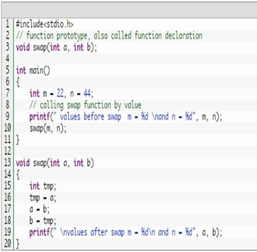

Functions C functions are basic building blocks in a program. All C programs are written using functions to improve re-usability, understandability and to keep track on them.
What is C function?
A large C program is divided into basic building blocks called C function. C function contains set of instructions enclosed by “{ }” which performs specific operation in a C program. Actually, Collection of these functions creates a C program.
Uses of C functions:
C functions are used to avoid rewriting same logic/code again and again in a program.
There is no limit in calling C functions to make use of same functionality wherever required.
We can call functions any number of times in a program and from any place in a program.
A large C program can easily be tracked when it is divided into functions.
The core concept of C functions are, re-usability, dividing a big task into small pieces to achieve the functionality and to improve understandability of very large C programs.
C function declaration, function call and function definition:
There are 3 aspects in each C function. They are,
Function declaration or prototype – This informs compiler about the function name, function parameters and return value’s data type.
Function call – This calls the actual function
Function definition – This contains all the statements to be executed.
How to call C functions in a program?
There are two ways that a C function can be called from a program. They are,
Call by value
Call by reference
1. Call by value:
In call by value method, the value of the variable is passed to the function as parameter.
The value of the actual parameter cannot be modified by formal parameter.
Different Memory is allocated for both actual and formal parameters. Because, value of actual parameter is copied to formal parameter.
Note:
Actual parameter – This is the argument which is used in function call.
Formal parameter – This is the argument which is used in function definition
Example program for C function (using call by value):
In this program, the values of the variables “m” and “n” are passed to the function “swap”.
These values are copied to formal parameters “a” and “b” in swap function and used.

values before swap m = 22
and n = 44
values after swap m = 44
and n = 22
Output:
2. Call by reference:
In call by reference method, the address of the variable is passed to the function as parameter.
The value of the actual parameter can be modified by formal parameter.
Same memory is used for both actual and formal parameters since only address is used by both parameters.
Example program for C function (using call by reference):
In this program, the address of the variables “m” and “n” are passed to the function “swap”.
These values are not copied to formal parameters “a” and “b” in swap function.
Because, they are just holding the address of those variables.
This address is used to access and change the values of the variables.
A function definition in C programming consists of a function header and a function body. Here are all the parts of a function:
Return Type: A function may return a value. The return_typeis the data type of the value the function returns. Some functions perform the desired operations without returning a value. In this case, the return_type is the keyword void.
Function Name: This is the actual name of the function. The function name and the parameter list together constitute the function signature.
Parameters: A parameter is like a placeholder. When a function is invoked, you pass a value to the parameter. This value is referred to as actual parameter or argument. The parameter list refers to the type, order, and number of the parameters of a function. Parameters are optional; that is, a function may contain no parameters.
Function Body: The function body contains a collection of statements that define what the function does.
Example
Given below is the source code for a function called max(). This function takes two parameters num1 and num2 and returns the maximum value between the two:
/* function returning the max between two numbers */
int max(int num1, int num2)
{
/* local variable declaration */
int result;
if (num1 > num2)
result = num1;
else
result = num2;
return result;
}
Function Declarations
A function declaration tells the compiler about a function name and how to call the function. The actual body of the function can be defined separately.
return_typefunction_name( parameter list );
A function declaration has the following parts:
int max(int num1, int num2);
For the above defined function max(),the function declaration is as follows:
int max(int, int);
Parameter names are not important in function declaration, only their type is required, so the following is also a valid declaration:
Function declaration is required when you define a function in one source file and you call that function in another file. In such case, you should declare the function at the top of the file calling the function.